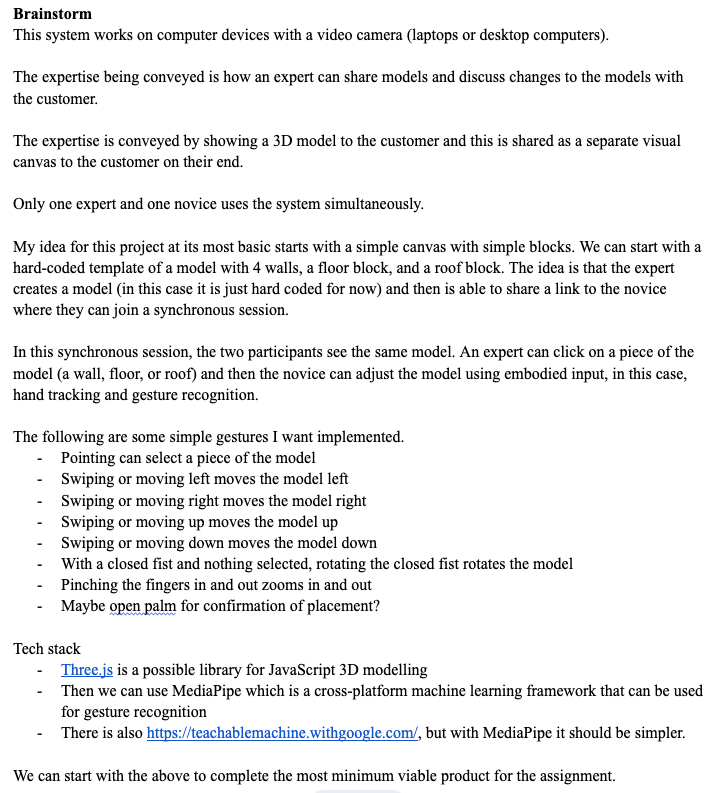

Brainstorming
Brainstorming involved thinking of different ways in which this software will work. What hardware will one need? How will expertise be shared? And to how many?
As a proof of concept, I wanted to start with something simple. Thus, I had in mind, a simple 4x4 wall "house" model that can be manipulated. I wanted the software experience to be synchronous for the expert and novice; sharing the view and allowing dynamic interactivity.
When thinking of what to use for hand gestures. I first thought about what seemed natural to me. If it is natural to me, it would be natural for a user. This includes gestures like pointing, swiping, pinching, closed first, and open palm which are all familiar to us in this digital age.
Three.js and MediaPipe were the best candidates for libraries to use in this project as they provide the functionality needed to create the 3D model experience and hand gesture functions for the application.

10+10 Sketches
The following are some initial sketches of the CAD share concept.
1 / 4
What proved most promising was the idea of using your own hand to manipulate the CAD model. It is intuitive and allows a more natural feel for embodied interaction in regards to user familiarity.
With an idea in mind, I began refining with an additional 10 sketches to focus on the functionality and user experience of the software. Also, I did an initial sketch of the UI I envisioned.
1 / 4
Video Demo
The Final Product
Start the session as an expert. Then, in another browser, copy and paste the URL in the application to join as the novice. Follow the instructions on the novice side to interact with the model.
The final proof of concept is a fully functional web app that allows the expert to share expertise with the novice on the model and for the novice to interact with models.
In development, I noticed that the hand gestures initially chosen were not as compatible with the hand landmarking as previously anticipated. This led to a change in using the open palm to move pieces of the model and a thumbs up to confirm placement.
For the future, I envision this application to act as a plugin for CAD software. Models can be imported and even edited with the plugin, allowing novices to edit models to their choosing with the guidance of an expert.
One downfall of the type of embodied interaction we used is that hand gestures are not universal. In some cultures, pointing with a finger is rude or innapropriate and that an open palm would be more suitable. This can lead to confusion with our chosen gestures in these cultures and a misunderstanding of use.